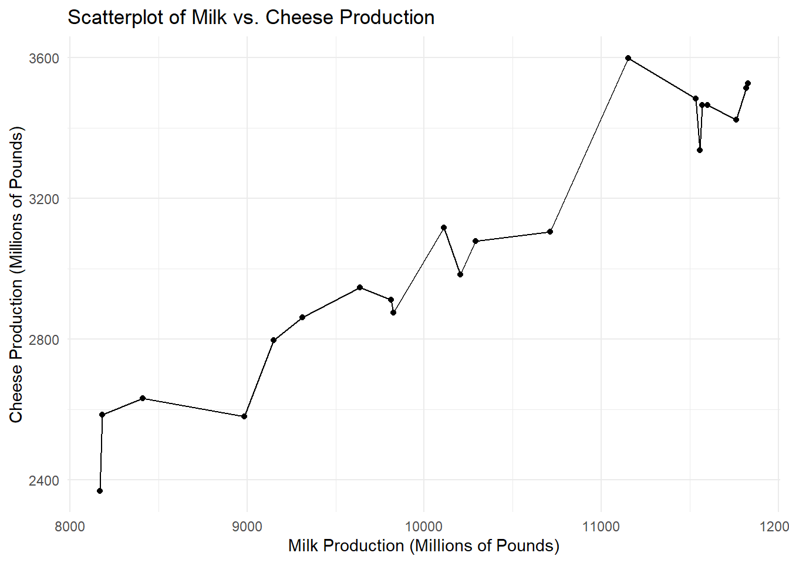
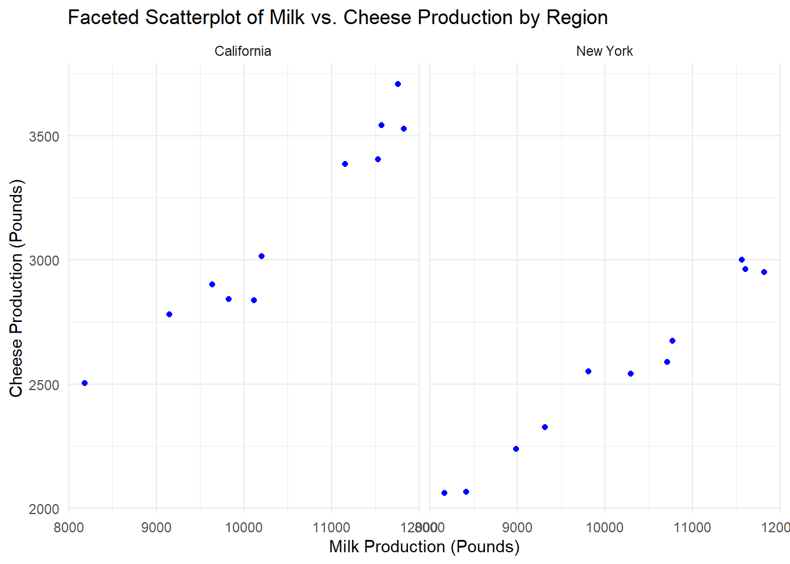
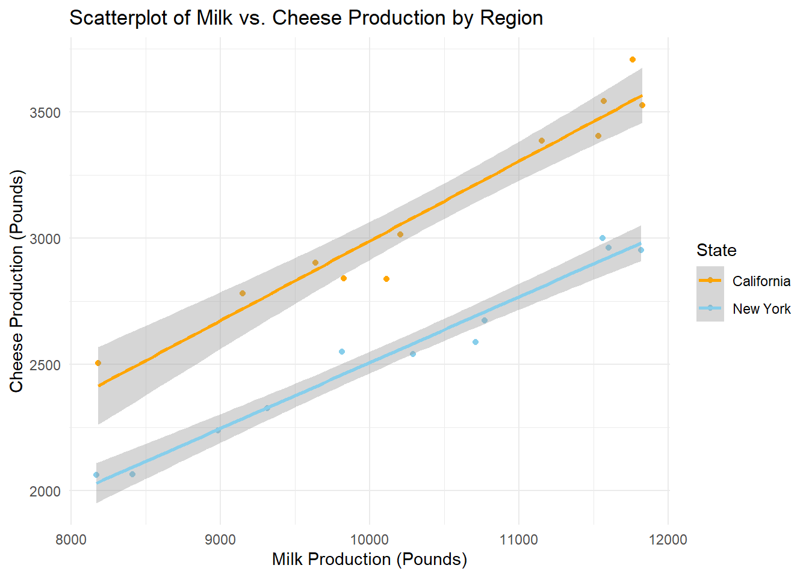
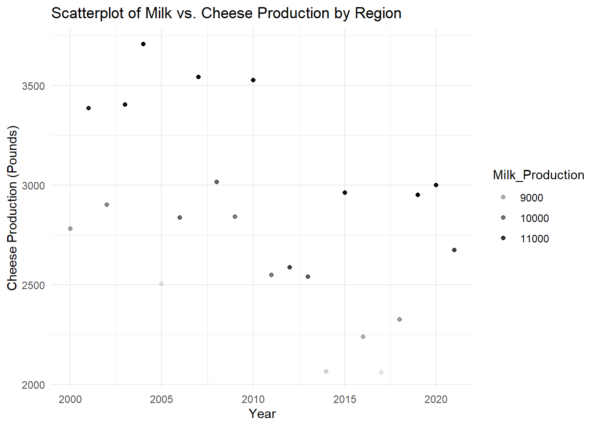

In the previous section, we showed a basic line plot using the ggplot2 package in R. We visualized the ratio of American Cheese to Mozzarella consumption over the years with a simple line and point plot. Here’s the code for the previous plot:
ggplot(merged_data, aes(x =year, y =ratio))+geom_point()+geom_line(color ="blue")+labs( x ="Year", y ="Ratio (American Cheese / Mozzarella)", title ="Ratio of American Cheese to Mozzarella Consumption Over the Years")
The power of data visualization is crucial in the field of data analysis and exploration. It allows us to gain insights from data, identify patterns, and convey complex information in an understandable manner. ggplot2, a popular data visualization package in R, is a versatile and powerful tool for creating a wide range of plots and graphs.
What sets ggplot2 apart is its unique layering system, which allows you to add different components to a plot in a structured and modular way. Layers enable us to build complex and informative visualizations by adding various elements to our plots, such as multiple data series, labels, titles, and more.
As an example, we can present the earlier plot in the following manner:
ggplot(merged_data, aes(x =year, y =ratio))+geom_point(size =2)+geom_line(color ="blue", linewidth =1)+geom_smooth(method ="lm", formula =y~poly(x, 2), se =TRUE, color ="red")+labs( x ="Year", y ="Ratio (American Cheese / Mozzarella)", title ="Ratio of American Cheese to Mozzarella Consumption Over the Years", subtitle ="Plot with Regression Lines", caption ="Data source: GitHub")+theme_minimal()
Here’s a quick breakdown of previous code:
Data and Aesthetics (ggplot):
We start with the ggplot function, specifying the dataset merged_data and aesthetic mappings. The x-axis represents the “year,” and the y-axis represents the “ratio.”
Scatterplot (geom_point):
The geom_point layer is added to create a scatterplot of data points. Each point represents a data entry.
The size parameter is set to 2, making the points larger for better visibility.
Line Plot (geom_line):
The geom_line layer is used to create a line plot. This line connects the data points in chronological order, providing a visual representation of the trend.
The color parameter is set to “blue,” and the linewidth parameter is set to 1 to customize the color and thickness of the line.
Regression Line (geom_smooth):
We’ve added a regression line to the plot using the geom_smooth layer.
The method is set to lm (linear model), indicating a linear regression model.
The formula argument specifies a polynomial regression model (y ~ poly(x, 2)) of degree 2.
The se parameter is set to TRUE, which adds confidence intervals around the regression line, giving an indication of the uncertainty.
The color parameter is set to “red” to make the regression line visually distinct.
Labels (labs):
The labs function is used to add labels and titles to the plot. It provides clarity and context to the visualization.
The x-axis label is “Year”, the y-axis label is “Ratio (American Cheese / Mozzarella)”, the main title is “Ratio of American Cheese to Mozzarella Consumption Over the Years”, the subtitle specifies that this is a plot with regression lines, and the caption attributes the data source to “GitHub”.
Theme (theme_minimal):
Finally, the theme_minimal() function is applied to give the plot a clean and uncluttered appearance. This minimal theme provides a simple background, allowing the data and plot elements to take center stage.
5.1ggplot2 grammar
ggplot2, is built on the foundation of the “Grammar of Graphics.” This framework allows you to create intricate and customized plots by layering (Figure 5.1) different geometric shapes and elements. Understanding the concept of geometry and layering is essential for informative visualizations.
Figure 5.1: Source: Quebec Centre for Biodiversity Science (2022), Chapter 5 in Workshop 3: Introduction to Data Visualization. source.
Below, we present a breakdown of different elements and common parameters for each within the Grammar of Graphics framework:
5.1.1 Basic elements
Data: This refers to your dataset, organized in a tidy format, and serves as the foundation for your plot. You can utilize dplyr techniques to prepare the data for optimal plotting, usually requiring one row for each observation you intend to visualize.
Aesthetics (aes): Aesthetics are parameters that make the data visually meaningful. Here are some common aesthetics:
x, y: Represent variables along the x and y axes, respectively.
colour: Dictates the color of the graphic elements based on data.
fill: Specifies the interior color of the graphical element.
group: Defines the group to which a graphical element belongs.
shape: Determines the figure used for plotting a point.
linetype: Specifies the type of line to be used (e.g., solid, dashed).
size: Controls the size of elements to represent an additional dimension.
alpha: Governs the transparency level of the graphical element.
Geometric Objects (geoms): Geoms determine the type of plot to create. Here are some common geoms:
geom_point(): Used for scatterplots.
geom_line(): Connects points in increasing order of x values.
geom_path(): Connects points in the sequence of appearance.
geom_boxplot(): Generates box and whisker plots for categorical variables.
geom_bar(): Creates bar charts, typically used for categorical x-axes.
geom_histogram(): Produces histograms, commonly for continuous x-axes.
geom_violin(): Represents the kernel of data dispersion in a distribution.
geom_smooth(): Generates a function line based on data.
Facets: Faceting helps create small multiples, allowing you to visualize subsets of your data. You can use facet_wrap() or facet_grid() for this purpose.
Statistics: Statistics are similar to geoms, but they are computed values that summarize your data. They can show means, counts, and other statistical summaries.
Coordinates: Coordinates determine how data is mapped onto the plot. Here are some coordinate options:
coord_cartesian: Sets limits for the plot.
coord_polar: Used for circular plots.
coord_map: Applied for various map projections.
Themes: Themes define the overall visual defaults for your plot. You can use themes to specify fonts, colors, shapes, and outlines to achieve a consistent visual style.
Next, we will demonstrate the layering grammar of ggplot2. On this example we will learn how to create a scatterplot with ggplot2 and add layers, geometries, and configurations step by step using simulated dairy cattle production data.
Step 1: Inserting data and Aesthetics
# Simulated dairy cattle production dataset.seed(123)cattle_data<-data.frame( Year =2000:2020, Milk_Production =runif(21, min =8000, max =12000))|>mutate(Cheese_Production =(Milk_Production*0.3)+rnorm(21, 0, 100))# Create a ggplot object with data and aestheticsscatter_plot<-ggplot(cattle_data, aes(x =Milk_Production, y =Cheese_Production))scatter_plot
Step 2: Adding the Scatterplot (points) Geometry
# Add the scatterplot geometry using geom_pointscatter_plot<-scatter_plot+geom_point()scatter_plot
Step 3: Adding Labels and Title
# Add labels and a titlescatter_plot<-scatter_plot+labs( x ="Milk Production (Millions of Pounds)", y ="Cheese Production (Millions of Pounds)", title ="Scatterplot of Milk vs. Cheese Production")scatter_plot
Step 4: Applying a Minimal Theme
# Apply a minimal themescatter_plot<-scatter_plot+theme_minimal()# Display the scatter plotprint(scatter_plot)
5.2 Exploring Geometries
In this instance, we will present different geometric shapes and their application in ggplot2 visualizations.
Example (Simple Line Plot)
In ggplot2, a line plot is often utilized in conjunction with a scatterplot, as they are frequently applied to the same dataset and serve the same visualization purpose. It is not uncommon for both types of plots to be used together.
# Create a ggplot object for a scatterplot and line plotline_plot<-ggplot(cattle_data, aes(x =Milk_Production, y =Cheese_Production))+geom_point()+# Scatterplot (points)geom_line()+# Line plotlabs( x ="Milk Production (Millions of Pounds)", y ="Cheese Production (Millions of Pounds)", title ="Scatterplot of Milk vs. Cheese Production")+theme_minimal()line_plot# Display the combined plot

This type of plot is commonly employed to visualize and describe time series data, particularly in the context of climate and environmental data over time.
# Create a sample time series datasetset.seed(123)date_range<-seq(as.Date("2023-01-01"), as.Date("2023-12-01"), by="1 month")temperature_data<-data.frame( Date =date_range, Temperature =runif(length(date_range), min =0, max =30))# Create a time series plotggplot(temperature_data, aes(x =Date, y =Temperature))+geom_point()+geom_line()+labs( x ="Date", y ="Temperature (°C)", title ="Monthly Temperature Time Series")+theme_minimal()
Example (Histogram)
Histograms are a commonly employed data visualization tool to illustrate the frequency distribution of a specific variable. To illustrate this, we will use the “state_milk_production” dataset, filtering it for a particular year (as it is not meaningful to examine the distribution of a variable measured over multiple years).
# Filter the dataset for a specific year and select the 'milk_produced' columnyear_to_analyze<-1980filtered_data<-state_milk_production%>%filter(year==year_to_analyze)%>%select(milk_produced)# Create a histogramggplot(filtered_data, aes(x =milk_produced))+geom_histogram(bins =8, boundary=0)+labs( x ="Milk Production (Pounds)", y ="Frequency", title =paste("Milk Production Distribution for the Year", year_to_analyze))+theme_minimal()
Example (Bar Plot)
# Filter data to focus on the top 5 states with the highest milk productiontop_states<-state_milk_production%>%group_by(state)%>%summarise(avg_Milk =mean(milk_produced))%>%arrange(desc(avg_Milk))%>%head(5)# Create a bar plot to compare milk production in the top 5 statesbar_plot_top_states<-ggplot(top_states, aes(x =reorder(state, -avg_Milk), y =avg_Milk))+geom_bar(stat ="identity")+labs( x ="State", y ="Average Milk Production (Pounds)", title ="Top 5 States with Highest Milk Production")+theme_minimal()# Display the bar plotprint(bar_plot_top_states)
Example (Scatter Plot with linear fit)
Expanding upon a dataset that includes data on milk and cheese production in various states and regions, we move beyond the confines of a basic linear plot. By introducing trendlines, we empower ourselves to delve deeper into the intricacies of the relationships between these variables.
# Create a linear plot with trendlineslinear_plot<-ggplot(cattle_data, aes(x =Milk_Production, y =Cheese_Production))+geom_point()+# Scatterplot pointsgeom_smooth(method ="lm", formula =y~x)+# Linear trendlineslabs( x ="Milk Production (Millions of Pounds)", y ="Cheese Production (Millions of Pounds)", title ="Linear Relationship Between Milk and Cheese Production")+theme_minimal()linear_plot
Example (Boxplot and Violin plot)
Similar to histograms, boxplots serve the purpose of visualizing data distributions. However, they are commonly employed when the goal is to compare these distributions among different groups.
# Filter the data to include only New York and Californiadf_groups<-state_milk_production%>%filter(state%in%c("New York", "California"))# Boxplotggplot(data =df_groups, aes(x =state, y =milk_produced))+geom_boxplot()+# Create a boxplotlabs(title ="Boxplot")+# Add a titletheme_minimal()# Apply a minimal theme
# Violin plotggplot(data =df_groups, aes(x =state, y =milk_produced))+geom_violin()+# Create a violin plotlabs(title ="Violin Plot")+# Add a titletheme_minimal()# Apply a minimal theme
Example (Representing maps)
Maps play a fundamental role in data visualization by providing a spatial context that aids in revealing patterns, relationships, and trends in various data sets, such as demographics, environmental factors, and resource distribution.
In this context, we will explore the spatial distribution of milk production across the United States.
# Create a new dataframe 'df' based on the 'state_milk_production' datasetdf<-state_milk_production%>%# Group the data by 'state'group_by(state)%>%# Calculate the average milk production for each statesummarise(avg_milk =mean(milk_produced))# load maps librarylibrary(maps, mapproj)
Attaching package: 'maps'
The following object is masked from 'package:purrr':
map
states_map<-map_data("state")# get a state-level map of the US# Let's make a new column for the states name# that matches the column of state names in our states_mapdf$region<-tolower(df$state)# Build our mapggplot(df, aes(map_id =region))+# the variable name to link our map and dataframegeom_map(aes(fill =avg_milk), # variable we want to represent with an aesthetic map =states_map)+# data frame that contains coordinatesexpand_limits(x =states_map$long, y =states_map$lat)+coord_map()+# projection labs(x ="", y ="")# remove axis labels
5.3 Faceting for Complex Data
Facetting in ggplot2 is a powerful technique that allows you to create multiple small plots, or facets, within a single visualization. Each facet typically represents a subset of your data, making it an effective way to compare and visualize multiple aspects of your dataset simultaneously. In this example, we will explore faceting in ggplot2 and demonstrate its utility through two different scenarios.
Example 1:
In the first example, we’ll use faceting to create a bar plot that shows the average milk production in the states of New York and California over the years 2010 to 2014. This will help us visualize how milk production varies in these two states during this time period.
`summarise()` has grouped output by 'state'. You can override using the
`.groups` argument.
# Create a faceted bar plot for milk production by stateggplot(df_2, aes(x =state, y =avg_milk))+geom_bar(stat ="identity", fill ="lightblue")+facet_wrap(~year, nrow =1)+# Facet by year with one rowlabs( x ="State", y ="Milk Production (Pounds)", title ="Faceted Bar Plot of Milk Production by Year")+theme_minimal()
Example 2:
In the second example, we’ll use facetting to create a scatterplot to compare the relationship between milk and cheese production for different regions. This will allow us to visually explore how these two variables are related in two different states.
# Set the random seed for reproducibilityset.seed(123)# Create a dataframe for cattle data with two statescattle_data_2<-data.frame( Year =2000:2021, State =rep(c("California", "New York"), each =11), # Assign two states alternately Milk_Production =runif(22, min =8000, max =12000)# Simulate milk production)%>%mutate( Cheese_Production =case_when(State=="California"~(Milk_Production*0.3)+rnorm(22, 0, 100),State=="New York"~(Milk_Production*0.25)+rnorm(22, 0, 80)))# Create a faceted scatterplot with cattle data for milk vs. cheese production by regionggplot(cattle_data_2, aes(x =Milk_Production, y =Cheese_Production))+geom_point(color ="blue")+facet_wrap(~State, ncol =2)+# Facet by region with 2 columnslabs( x ="Milk Production (Pounds)", y ="Cheese Production (Pounds)", title ="Faceted Scatterplot of Milk vs. Cheese Production by Region")+theme_minimal()

5.4 Configuring aesthetics
Now, let’s explore the fundamental aspects of the aesthetic layer in data visualization. Aesthetics, as specified with aes() in ggplot2, enable us to distinguish between classes, groups, and data structures effectively.
In this section, we will examine key aesthetic properties, such as color, shape, size, labels, and transparency. These attributes function as essential tools for tailoring your visualizations to specific requirements, allowing you to craft informative, customizable plots that faithfully represent your data’s insights.
5.4.1 Colour
1. Groups (discrete variables)
ggplot(cattle_data_2, aes(x =Milk_Production, y =Cheese_Production, col =State))+geom_point()+geom_smooth(method ="lm", formula =y~x)+labs( x ="Milk Production (Pounds)", y ="Cheese Production (Pounds)", title ="Scatterplot of Milk vs. Cheese Production by Region")+theme_minimal()
2. Gradients (continous variables)
ggplot(cattle_data_2, aes(x =Year, y =Cheese_Production, col =Milk_Production))+geom_point()+labs( x ="Year", y ="Cheese Production (Pounds)", title ="Scatterplot of Milk vs. Cheese Production by Region")+theme_minimal()
2. Manual colors
Discrete variables
ggplot(cattle_data_2, aes(x =Milk_Production, y =Cheese_Production, col =State))+geom_point()+geom_smooth(method ="lm", formula =y~x)+labs( x ="Milk Production (Pounds)", y ="Cheese Production (Pounds)", title ="Scatterplot of Milk vs. Cheese Production by Region")+theme_minimal()+scale_colour_manual(values =c("orange","skyblue"))

Gradient
ggplot(cattle_data_2, aes(x =Year, y =Cheese_Production, col =Milk_Production))+geom_point()+labs( x ="Year", y ="Cheese Production (Pounds)", title ="Scatterplot of Milk vs. Cheese Production by Region")+theme_minimal()+scale_color_gradient(low ="gray85", high ="black")
5.4.2 Shape Size and alpha
Let’s move past colors for a moment. If we want to change how our data points look, we can use different shapes for different groups by specifying the “shape” parameter within the “aes()” layer. This is similar to what we did with colors. For instance, we can use the “species” variable to group our data points by shape.
If we’d like to control the size of the data points, we can use the “size” parameter in the same way. And if we want to make data points more or less transparent, we can use the “alpha” parameter. Both of these options work well when dealing with continuous data.
Shape for discrete variables
ggplot(cattle_data_2)+geom_point(aes(x =Milk_Production, y =Cheese_Production, shape =State))+geom_smooth(method ="lm", formula =y~x, aes(x =Milk_Production, y =Cheese_Production, linetype =State))+labs( x ="Milk Production (Pounds)", y ="Cheese Production (Pounds)", title ="Scatterplot of Milk vs. Cheese Production by Region")+theme_minimal()
Size and Alpha for continous
ggplot(cattle_data_2)+geom_point(aes(x =Year, y =Cheese_Production, size =Milk_Production))+labs( x ="Year", y ="Cheese Production (Pounds)", title ="Scatterplot of Milk vs. Cheese Production by Region")+theme_minimal()
alpha
ggplot(cattle_data_2)+geom_point(aes(x =Year, y =Cheese_Production, alpha =Milk_Production))+labs( x ="Year", y ="Cheese Production (Pounds)", title ="Scatterplot of Milk vs. Cheese Production by Region")+theme_minimal()

Legends
5.5 Configuring themes
Throughout this turorial, the plots have consistently utilized the “theme_classic()” setting. This choice was made because the default gray background can sometimes make certain colors less distinct and harder to discern.
The ggplot2 package boasts an extensive array of theme elements, far too numerous to cover comprehensively here.
Rather than exploring the multitude of attributes contained within the “theme()” function Figure 5.2, you can initiate your theming journey with theme functions. These theme functions come equipped with a predefined set of elements to begin with. Below, you’ll find some illustrative examples:
Figure 5.2: ggplot2 theme reference sheet by Isabella Benabaye source.
5.5.1 Default theme
ggplot(cattle_data_2, aes(x =Milk_Production, y =Cheese_Production, col =State))+geom_point()+geom_smooth(method ="lm", formula =y~x)+labs( x ="Milk Production (Pounds)", y ="Cheese Production (Pounds)", title ="Scatterplot of Milk vs. Cheese Production by Region")# +
#theme_gray()
5.5.2 Classic theme
ggplot(cattle_data_2, aes(x =Milk_Production, y =Cheese_Production, col =State))+geom_point()+geom_smooth(method ="lm", formula =y~x)+labs( x ="Milk Production (Pounds)", y ="Cheese Production (Pounds)", title ="Scatterplot of Milk vs. Cheese Production by Region")+theme_classic()
5.5.3 Theme minimal
ggplot(cattle_data_2, aes(x =Milk_Production, y =Cheese_Production, col =State))+geom_point()+geom_smooth(method ="lm", formula =y~x)+labs( x ="Milk Production (Pounds)", y ="Cheese Production (Pounds)", title ="Scatterplot of Milk vs. Cheese Production by Region")+theme_minimal()
5.5.4 Theme dark
ggplot(cattle_data_2, aes(x =Milk_Production, y =Cheese_Production, col =State))+geom_point()+geom_smooth(method ="lm", formula =y~x)+labs( x ="Milk Production (Pounds)", y ="Cheese Production (Pounds)", title ="Scatterplot of Milk vs. Cheese Production by Region")+theme_dark()
A compelling choice is to establish a consistent theme that spans your entire analysis. For this, we can use the set_theme() option:
theme_set(theme_minimal())ggplot(cattle_data_2, aes(x =Milk_Production, y =Cheese_Production, col =State))+geom_point()+geom_smooth(method ="lm", formula =y~x)+labs( x ="Milk Production (Pounds)", y ="Cheese Production (Pounds)", title ="Scatterplot of Milk vs. Cheese Production by Region")
Using the properties detalied in Figure 5.2 you can also set your own theme:
mytheme<-theme_bw()+theme(plot.title =element_text(colour ="blue"))+theme(legend.position ="left")ggplot(cattle_data_2, aes(x =Milk_Production, y =Cheese_Production, col =State))+geom_point()+geom_smooth(method ="lm", formula =y~x)+labs( x ="Milk Production (Pounds)", y ="Cheese Production (Pounds)", title ="Scatterplot of Milk vs. Cheese Production by Region")+mytheme
While ggplot2 offers a set of default themes that are functional and clean, you can expand your design possibilities by integrating the “ggthemes” library. This additional library introduces an array of new themes that cater to specific needs and preferences, from classic and minimalistic to vibrant and distinctive.
## excel themeggplot(cattle_data_2, aes(x =Milk_Production, y =Cheese_Production, col =State))+geom_point()+geom_smooth(method ="lm", formula =y~x)+labs( x ="Milk Production (Pounds)", y ="Cheese Production (Pounds)", title ="Scatterplot of Milk vs. Cheese Production by Region")+theme_excel()
## tufte themep_tufte=ggplot(cattle_data_2, aes(x =Milk_Production, y =Cheese_Production, col =State))+geom_point()+geom_smooth(method ="lm", formula =y~x)+labs( x ="Milk Production (Pounds)", y ="Cheese Production (Pounds)", title ="Scatterplot of Milk vs. Cheese Production by Region")+theme_fivethirtyeight()p_tufte
5.6 Arrange plots
Sometimes is useful to combine one or more plots in one image. R provide several options to do this.
The following object is masked from 'package:dplyr':
combine
# Create some sample plotsplot1<-ggplot(mtcars, aes(x =mpg, y =disp))+geom_point()plot2<-ggplot(mtcars, aes(x =hp, y =wt))+geom_point()# Arrange the plots into a 2x1 gridgrid.arrange(plot1, plot2, ncol =2)
2. Using patchwork
patchwork is a popular package for arranging ggplot2 plots. It allows you to create complex layouts by combining and arranging plots.
You can install the patchwork package with install.packages("patchwork").
Here’s how to use patchwork with examples:
library(patchwork)# Combine the plots horizontally using the `+` operatorcombined_plots<-plot1+plot2combined_plots
3. Using | for Simpler Vertical Arrangement
You can also arrange ggplot2 plots vertically using the | operator, making it simple and effective.
Here’s how to use | with examples:
# Arrange the plots vertically using the | operatorcombined_plots<-plot1|plot2combined_plots
In this tutorial, we’ve covered three methods to arrange ggplot2 plots. You can choose the one that best suits your needs and preferences. These techniques will help you effectively display and compare multiple plots in your data visualization projects.
5.7 Other plots
Pie Chart
Dendrogram
5.8 Saving plots
To save a plot, we can employ the ggsave function. Within this function, you specify the desired filename, including the file format extension (e.g., “plot.png”). Next, you provide the name of the plot object in R, which, in this case, is “plot.png.” Additionally, you can specify the desired height and width of the saved plot, along with the units of measurement, such as inches.
ggsave(filename ="plot.png", # Name the file plot =p_tufte, # Name of the plot object in R height =8.5, # Provide the desired dimensions width =11, units ="in")